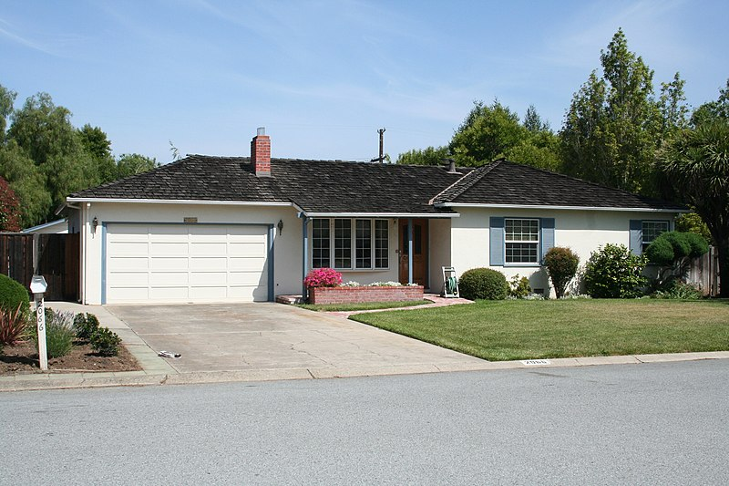
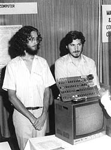
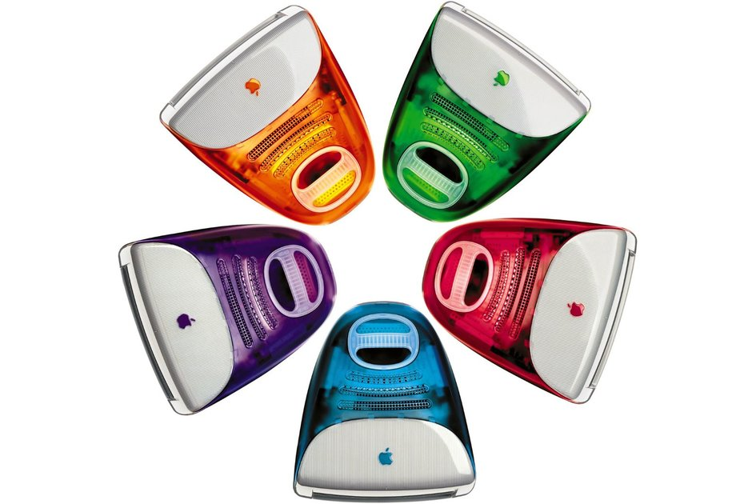
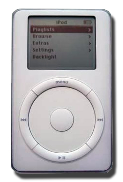

De jonge jaren van Steve Jobs
Steven Paul Jobs werd in 1955 geboren, en werd geadopteerd door twee laagopgeleide ouders,
ookal was dat tegen de wil in van zijn biologische ouders. Paul Jobs, Steve's vader, liet zijn zoon
al jong kennis maken met techniek. Hij was namelijk automonteur. Paul leerde Steve ook dat niet
alleen de buitenkant perfect moet zijn, ook de binnenkant moet mooi zijn, ondanks dat niemand dat
ooit zal zien. Steve heeft dat zijn hele leven onthouden. Toen Steve zes jaar was, moesten zijn ouders
hem bekennen dat hij was geadopteerd. Hij was boos op zijn ouders, maar zijn vader had een goede reactie:
Je moet het anders zien, we hebben jou speciaal uitgekozen. Daarna was het weer goed.
Toen onderbouwer Steve op de middelbare school zat, leerde hij de bovenbouwer en naamgenoot Steve
Wozniak ("Woz") kennen. Die leerde Steve ook veel, bijvoorbeeld over hoe je een circuit bouwt. Woz
was een zeer slimme jongen, hij vond booleaanse algebra een makkelijk onderwerp (terwijl het toch
echt werd beschouwd als een ingewikkeld deel van de wiskunde), en hij won zelfs een keer een
wedstrijd van de plaatselijke luchtmacht met een rekenmachine, waarmee hij de vier jaar oudere
12th-graders de pan inhakte.
Kattenkwaad
Steve en Steve hebben heel wat 'pranks' uitgehaald, waarvan één zo goed verwoord is door Walter Isaacson in de biografie van Steve Jobs, dat die het zeker waard is te citeren:
Een andere grap betrof een door Wozniak gebouwd zakapparaatje waarmee signalen uitgezonden konden
worden die werden opgevangen door de tv. Hij nam het wel eens mee naar een vertrek waar mensen tv zaten
te
kijken, bijvoorbeeld in een studentenhuis, en hield dan stiekem de knop ingedrukt zodat het beeld
helemaal
vaag werd. Als iemand dan opstond om de tv een klap te geven, liet Wozniak de knop los en werd het beeld
weer scherp. Liepen de nietsvermoedende kijkers heen en weer als hij het wilde, dan maakte hij het een
beetje
moeilijker. Hij hield het beeld dan gestoord tot iemand de antenne aanraakte. En uiteindelijk liet hij
hen
denken dat het beeld alleen nog scherp was als iemand de antenne vasthield en op één been stond, of zijn
hand op de tv bleef houden.
Een minstens even leuke grap haalden Jobs, Woz en Allen Baum (een vriend van Woz) uit bij de school van Jobs, ookal waren Woz en Baum al van die school af. Ze hadden een spandoek gemaakt om de eindexamenklas uit te zwaaien, er stond een grote vuiste met een dikke middelvinger op, en ernaast de letters SWAB JOB. Dat waren de initialen van Wozniak en Baum samen, en een deel van Jobs' naam. De woordkeuze was niet toevallig, in het Engels betekent het ook 'dweiltaak'. Jobs werd geschorst.
Ondanks dat Steve geschorst was, was die grap nog redelijk onschuldig. De Blue Box was nog een niveautje
hoger:
Een Amerikaanse hacker had een zwakte in het systeem van AT&T (de grootste Amerikaanse provider op dat
moment) dat bedoeld was voor lange-afstandscommunicatie. Door een fluitje dat je bij de ontbijtgranen
kreeg te gebruiken, kreeg je dezelfde 2600 Hz tonen als het netwerk van AT&T. Een Blue Box maakte daarvan
gebruik en daardoor kon je bellen naar de andere kant van het land voor de lokale kosten. Wozniak kreeg
het voor elkaar om zo'n doos te maken en zodra hij werkte belden de twee Steve's de oom van Woz. Ze
hadden het verkeerde nummer ingetoetst, dus ze kregen een geïrriteerde man aan de lijn die niet begreep
waar ze had over hadden met dat gratis bellen, al was dat waarschijnlijk ook omdat hij net zoals
Jobs en Woz in Californië woonde.
Het werd echter serieuzer toen ze die dingen gingen verkopen (illegeaal natuurlijk). De laatste keer
dat ze er een verkochten was de keer dat ze bedreigd werden met een pistool, omdat de kopers geen zin
hadden om ervoor te betalen. Toen was het ook over, maar het was een winstgevend handeltje geweest.
De oprichting
We maken een hele sprong in de tijd. De aanleiding van de geboorte van een bedrijf was als volgt: Jobs
vond dat Woz zijn ontwerpen niet gratis moest weggeven, als je er veel geld mee kon verdienen. Woz dacht
nooit aan geld, maar Jobs zag overal wel winst in. Ze verkochten een paar
van hun bezittingen, waardoor ze $1300 hadden om een bedrijf te beginnen. De naam was nog onbekend, Jobs
legde later uit waar Apple Computer vandaan kwam: Hij was bezig met een fruitdieet (waardoor hij later zou
overlijden, overigens) en was net bij een appelboomgaard geweest. Hij vond het leuk klinken, vlot en
niet intimiderend. Bovendien zouden we dan bovenaan in het telefoonboek staan. Woz en Jobs gingen
met een goede vriend in zee, Ron Wayne. Met zijn drieën vormden zij de basis, dat was de bedoeling
althans.
Omdat de personen persoonlijk verantwoordelijk waren voor het bedrijf, konden zij dus hun eigen
bezittingen
kwijtraken als het niet lekker liep. Aangezien Jobs en Woz alles al hadden verkocht, vond Wayne het risico
te
groot en trok zich terug, hij kreeg uiteindelijk $2300 uitgekeerd voor de ingeleverde aandelen. Had hij ze
gehouden tot 2010, dan waren ze $2,6 miljard waard geweest!
Het bedrijf kwam goed uit de verf, Jobs wist $15.000 te lenen en ze hadden al een deal om 50 computers
voor
$25.000 te leveren aan de Byte Shop. Daarvoor hadden ze dertig dagen, en de hele familie Jobs
werd opgetrommeld
om te helpen. Om het professioneel aan te pakken had Jobs een telefoonservice ingeschakeld die
allebelletjes
doorschakelde naar... zijn moeder.
In 1977, het jaar waarin ook de Apple II werd geïntroduceerd, veranderde het logo van Isaac Newton naar
een
regenboogappel. Om dat hapje bestaat tot op de dag van vandaag nog verwarring, maar het zit zo: Het was om
verwarring te voorkomen(!), zodat mensen niet dachten dat het een kers was. Ook gaat het verhaal dat het
een
verwijzing is naar Alan Turing (degene die in WOII de codering van de Duitsers kraakte en die zelfmoord
pleegde
door in een vergiftigde appel te bijten). Isaacson zegt daarover in het voorwoord van de biografie van
Jobs:
Zo e-mailde ik hem een keer om te vragen of het waar was, zoals mijn dochter me had verteld, dat het
Apple-
logo een eerbetoon was aan Alan Turing, de Britse computerpionier die in de Tweede Wereldoorlog het
Duitse
coderingssysteem had weten te ontcijferen en die in 1954 zelfmoord pleegde door van een appel vol
cyanide
te eten. Hij antwoordde dat hij wilde dat hij daaraan gedacht had, maar dat het niet zo
was.
Geboorte van de Mac
Het "bedrijfsuitje", als je het zo mag noemen, naar Xerox Parc in Palo Alto bleek een goede investering te zijn. Daar kwam het team in aanraking met het bitmap systeem, waarmee je alle pixels apart kon bedienen in plaats van die lelijke groene tekens. Eén probleempje, de formele leider van het Macintosh-team vond het wijs-aan-en-klik maar niks, in tegenstelling tot Jobs. Wie dacht die leider wel niet dat ie was? Nou... :
Raskin, een filosofisch mens die zowel kwajongensachtig als zwaar op de hand kon zijn, had computer
wetenschappen gestudeerd, lesgegeven in muziek en beeldende kunst, een klein operagezelschap
gedirigeerd en straattheater georganiseerd. In zijn proefschrift uit 1967 voor de universiteit van
Californië in San Diego stelt hij dat computers beter van grafische interfaces gebruik kunnen maken
dan van de op tekst gebaseerde interfaces. Toen hij genoeg had van het lesgeven huurde hij een
heteluchtballon, vloog over het huis van de rector en schreeuwde dat hij ontslag nam.
Afijn, die Raskin en Jobs hielden het niet uit met elkaar. De algemeneen directeur besloot om Jobs te
houden en Raskin met verlof te sturen, per slot van rekening zat Jobs bij het Mac-team slechts in het
bijgebouw en dat was een goede manier om hem van het hoofdgebouw weg te houden. Hij was daar niet geliefd,
hij was namelijk uit het Lisa-project gezet (de Lisa was een ander computer die ontwikkeld werd) en
concurreerde nu binnen zijn eigen bedrijf met de Macintosh.
De Lisa bleek een grote flop, niemand wilde het ding hebben. Wat overbleef, was de Macintosh, de enige
hoop van Apple. Die deed het beter dan de Lisa, en het Mac-team werd uitgebreid. Ze verhuisden naar
een twee verdiepingen tellend gebouw, boven een tankstation. Het werd daarom ook wel Texaco Towers
genoemd.
De val
In de jaren '90 maakte Apple een val mee. Dat kwam voornamelijk door het bedrijf van Bill Gates:
In plaats van een Blue Blox te maken om de telefoonmaatschappij op te lichten, maakte Gates voor zijn
school een programma voor het lesrooster, waarbij hij ervoor zorgde dat hij zelf in de klassen
terechtkwam met de leukste meisjes, en een programma om auto's te tellen voor de plaatslijke
verkeerstechneuten. Hij ging naar Harvard, en toen hij besloot om daar voortijdig mee te stoppen,
was dat niet om verlichting te zoeken bij een Indiase goeroe, maar om een bedrijf in
computersoftware te beginnen.
Wat heeft dat te betekenen? Nou, Jobs was ook een drop-out (schoolverlater), ondanks dat zijn
biologische ouders wilden dat hij naar de universiteit ging. Daarna ging hij naar Azië om daar
verlichting te zoeken, en die heeft hij naar eigen zeggen gevonden.
Microsoft kende een grote opmars, ten koste van Apple. Wat ook wel leuk is om te vertellen: Apple gaf
al sinds de jaren '80 stickers mee met hun producten. Vooral in die tijd werden ze populair, om te laten
zien dat je de 'underdog' steunde. Mensen plakten ze op hun werktassen of auto's zodat het duidelijk
te zien was. Het grote verschil tussen Apple en Microsoft was, dat Apple van begin tot eind het product
beheerste, waar Microsoft toen alleen nog software leverde.
Er is een mogelijke verklaring voor de val van Apple. Jobs had het nogal aan de stok met John Sculley,
de CEO. Het bestuur van het bedrijf besloot om van Jobs af te komen. Steve begon zijn eigen bedrijven
(opnieuw), NeXT Computer en Pixar. Met die eerste wilde hij Apple uit de markt concurreren, maar dat
was zegmaar niet helemaal gelukt. Er waren tijdens de volledige levensduur van NeXT slechts 50.000
computers verkocht. Ook IBM, toen nog een grote speler, was mede verantwoordelijk voor de krimp die
Apple doormaakte.

De wederopstanding
Apple had nog maar weken te leven tot ze bankroet zouden zijn. Toen besloot het bestuur om het bedrijf
van Jobs, NeXT, te kopen met het bijbehorende OS NeXTstep, voor ruim $400 miljoen. Jobs kwam terug
aan het roer als officieel 'interim CEO', omdat hij ook nog CEO van Pixar was. 2,5 jaar later, in
2000, liet hij weten bij de Macworld in San Francisco dat hij vanaf toen 'iCEO' zou zijn. In 1997
sloot Apple ook een overeenkomst met Micrososft (Bill Gates en Steve Jobs waren al lang goede vrienden)
waardoor Office naar de Macintosh kwam.
In 1998 kwam de iconische iMac G3 uit, je kon in de kast kijken en hij kwam in verschillende kleuren.
Ook de "Clamshell" (schelpdier) iBook G3 kwam uit, met ook al zulke leuke kleurtjes. In 2001 werd
Mac OS X geïntroduceerd, gebaseerd op NeXTStep.

Intel en iPods
Volgens Jobs had Apple (of eigenlijk de Mac) tot dusver twee grote transities meegemaakt: Mac OS X en
van Motorola naar PowerPC-chips. Daar kwam in 2005 nog eentje bij, PowerPC zou vervangen worden door
Intel. In 2006 werd dat in gang gezet, en tot 2020 zouden alle Apple-computers Intel gebruiken.
4 jaar eerder werd de iPod geïntroduceerd, een toen ongelooflijk handig apparaatje. Je kon er wel 1000
liedjes in kwijt. Dat was ook goed nieuws voor de muziekindustrie, er werd toen namelijk volop
gekopieerd van piratenwebsites. Door de iPod moesten mensen nu hun muziek kopen in de iTunes Store,
waardoor muzieklabels er tenminste aan verdienden. Jobs was ook altijd al van mening dat mensen eigenaar
willen zijn van de muziek, en het niet willen kunnen luisteren voor een maandelijks bedrag (alhoewel
dat nu het hele idee is van Apple Music). De iPod werd een enorm succes. De Shuffle-functie van Spotify
die je waarschijnlijk wel eens gebruikt hebt (of hebt moeten gebruiken omdat je geen betaald account
wil), komt van de iPod.
In 2001 werd de eerste Apple Store geopend in Virginia. Tegenwoordig zijn er meer dan 500 Apple Stores
(waarvan 270 in de VS) in 25 landen. Elke Apple Store is voorzien van een Genius Bar, waar je naartoe kan
als je problemen hebt met je Apple-aparaten.
De iPhone
An iPod, a phone, an internet communicator
Dat waren de legendarische woorden van Jobs bij de Macworld in San Francisco van 2007. Hij herhaalde
dat twee keer, en toen barstte het publiek in juichen uit. These are not three seperate devices,
this is one device! De iPhone was een revolutionair apparaat: Alle telefoons tot dan toe waren
voorzien van een plastic toetsenbordje en een stylus, iets waar Jobs vanaf wilde. Nadat Jobs het
Multi-Touch systeem had uitgelegd, zei hij And boy have we pattented it!. Later in de
presentatie belde hij nog voor een volle zaal een Starbucks die hij had opgezocht via de Kaarten-app
en bestelde 4000 koffietjes, waarna hij zei dat hij het verkeerde nummer had gebeld.
De iPhone 1 kostte $500. Dan denk je waarschijnlijk dat hij veel goedkoper is dan de iPhones van
tegenwoordig. Dan is er leuk nieuws voor je, dat is namelijk niet waar. Je kon de eerste iPhones
alleen maar via providers kopen, waardoor je er ook nog een reteduur abonnement bij moest nemen.
Hij kwam met 8GB opslag, dat is tegenwoordig net genoeg om iOS te kunnen draaien. Wil je ook nog
een filmpje maken... oh nee dat kon nog niet met de iPhone 1, ook Copy en Paste kon pas 3 jaar later.
Microsoft beweerde dat niemand dat ding hoefde, omdat het voor zakelijke klanten niks toevoegde en
dat $500 veel te veel was voor een telefoon. Eind 2010 had Apple al 90 miljoen iPhones verkocht en
ze hadden meer dan de helft van de winst behaald in de smartphone-industrie.
In 2010 introduceerde Jobs, inmiddels al wat magerder, de iPad. Hij kostte maar $499 en werkte handiger
dan een laptop. Veel mensen dachten dat het nooit wat zou worden (geen USB-poort), maar het tegendeel
is al lang en breed bewezen.
Watch en M1
In augustus 2011 trad Steve Jobs af als CEO, en werd vervangen voor Tim Cook. 1,5 maand later overleed
hij nadat zijn alvleesklierkanker (spreek het maar eens uit) was teruggekomen.
Tim Cook heeft tot nu toe één keer de One more thing-truc gebruikt, namelijk bij de introductie van de
Apple Watch in 2014.
Een jaar later werd de Mac Pro gelanceerd, maar dat werd zegmaar geen doorslaand succes. Je kon er
moeilijk je eigen onderdelen instoppen en omdat hij zo klein was werkte het koelen niet zo goed.
Hij werd ook wel de Trashcan Mac Pro genoemd, en die naam dankt hij mede aan de vorm.
Apple introduceerde de iPhone X in 2017. Het was de eerste iPhone met een notch en daarmee ook de
eerste waarvan het scherm de hele voorkant bedekte. De iPhone X kwam ook met Face ID.
In 2019 kreeg Apple een herkansing, met de derde generatie Mac Pro. Deze was in hoge mate customizable,
maar kost met de goedkoopste configuratie al $6000. Neem je de duurste, dan kom je rond de $60.000 uit.
En als je er ook nog wieltjes bij wil hebben, dan leg je nog eens $700 (!) neer. Hij werd samen met de
Pro Display XDR geïntroduceerd, ze hadden allebei een gatenpatroon dat leek op een kaasrasp, dus deze
keer heette hij de Cheese Grater Mac Pro.
Eind 2020 kondigde Apple een historische transitie aan:
Ze zouden
hun eigen chip gaan maken, de M1
.
Waar Intel ooit werd aanbeden, wekten ze de laatste jaren vooral irritaties bij Apple. Productpresentaties
moesten worden uitgesteld omdat Intel zijn chips niet op orde had. Hadden ze eenmaal een chip in elkaar
gezet, was hij sloom en vrat hij energie. Apple's M-series chip was de oplossing. Dankzij de M1 kan
de Macbook Air de hele dag mee, zonder op te laden. Eind 2022 zal de transitie voltooid zijn, het
enige product dat nog geen chip van Apple bevat is de Mac Pro.